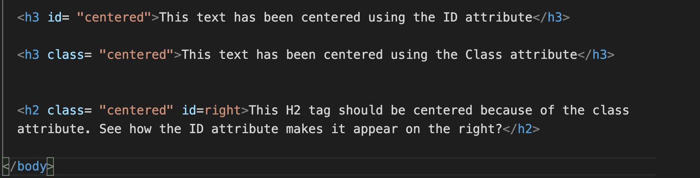
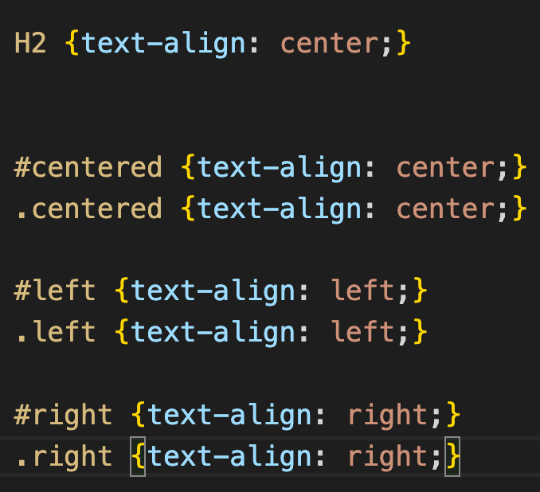

What are the best practices associated with using classes vs. ids?
You should use IDs on elements that appear only once on a page and need to perform a unique function.
You could achieve the same result by using a Class or an ID attribute, but remember that an ID attribute will get priority over a class attribute.
You should use the Class attribute when you have multiple elements that serve the same purpose or appear to be the same.
This text has been centered using the ID attribute
This text has been centered using the Class attribute
This H2 tag should be centered because of the class attribute, but see how the ID attribute makes it appear on the right?


The video below explains it quite well if you are still unsure.